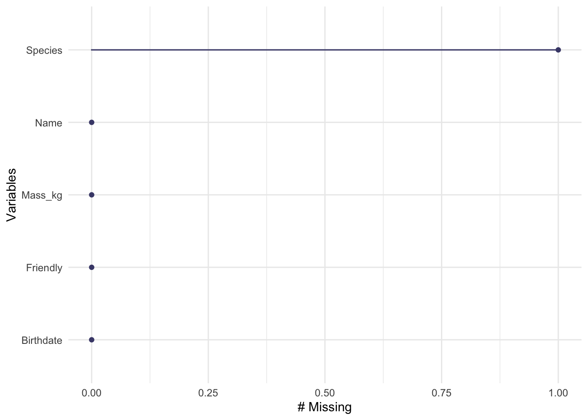

Data are the starting point for any visualization, but most data originate outside your data analysis environment. The process of moving data from “somewhere else” into your R environment so you can perform calculations and make visualizations is simply called “reading” the data. This is an apt name as R must interpret the data you give it and this often involves making decisions based on assumptions, which of course R does using pre-established conventions, not any cognitive model of reading that a human would use.
Most of the data we will use in this course are carefully organized to be easy to read into R, but when you find your own data or create your own data, you will almost certainly run into challenges. In this lesson we will look at the most common processes for reading data, highlight some of the problems that can arise, and identify some strategies for detecting and correcting problems.
An ideal data file is arranged as a rectangular array with the same number of columns in each row. The first row is a set of variable names and each of the rest of the rows is a separate observation.
11.1 Text files
It’s very common to distribute data from one computer user to another in a “text file”. This means a file you can open with a text editor and read without further interpretation. This format takes more storage space than a binary file, because for example, a number written out like 14956.421 takes 10 characters, but might take considerably less in a “binary” format. Text formats are usually favoured for all but the very largest files because they can be checked by humans and do not need a lot of documentation.
Text files are commonly identified as either being written as a set of comma separated values (csv) or tab separated values (tsv). Other delimeters are possible as well. A notable case arises from the way numbers are written in different cultures: some use a . for the decimal marker, others use a ,. An approximation of \(\pi\) might be written as 3.14159 in Canada and 3,14159 in Spain. This causes problems for csv files and gave rise to the csv2 file format which uses semicolons (;) between numbers.
The biggest problem with text files is that, as a rule, they contain no computer-readable information about how the text in each column should be interpreted: as a number, text, a date, time, a filename, or something else. This is the source of a lot of problems! R “guesses” the data type in each column, but can sometimes guess a type you don’t expect. The only good solutions are to use a database (which can have other challenges) or a binary format (which has problems too). Someday this will get fixed, but not before you are done this course!
Here are some examples using the functions in the readr and readxl packages. The three functions below are all specialize variants of read_delim. In each case the function prints the names of the variables (from the column header) and the data type inferred by R’s rules.
example1a<-read_csv("static/test-data.csv")
Rows: 3 Columns: 5
── Column specification ────────────────────────────────────────────────────────
Delimiter: ","
chr (2): Name, Species
dbl (1): Mass_kg
lgl (1): Friendly
date (1): Birthdate
ℹ Use `spec()` to retrieve the full column specification for this data.
ℹ Specify the column types or set `show_col_types = FALSE` to quiet this message.
example1b<-read_csv2("static/test-data2.csv")
ℹ Using "','" as decimal and "'.'" as grouping mark. Use `read_delim()` for more control.
Rows: 3 Columns: 5── Column specification ────────────────────────────────────────────────────────
Delimiter: ";"
chr (2): Name, Species
dbl (1): Mass_kg
lgl (1): Friendly
date (1): Birthdate
ℹ Use `spec()` to retrieve the full column specification for this data.
ℹ Specify the column types or set `show_col_types = FALSE` to quiet this message.
example2<-read_tsv("static/test-data.txt")# A tab character is written as \t
Rows: 3 Columns: 5
── Column specification ────────────────────────────────────────────────────────
Delimiter: "\t"
chr (2): Name, Species
dbl (1): Mass_kg
lgl (1): Friendly
date (1): Birthdate
ℹ Use `spec()` to retrieve the full column specification for this data.
ℹ Specify the column types or set `show_col_types = FALSE` to quiet this message.
Here we have examples with text (characters), numbers (double), dates (date), and true/false (boolean or logical) data.
These are very small files all with the same data which you can find here: csv, csv2, tsv. Tab separated files come with a variety of “extensions”: sometimes tsv, tab, or txt.
I created these files using a spreadsheet program, and you may often find yourself editing data using a program like Excel. Here is how you can read that file directly.
You should look at each of these files in a text editor (such as textedit on a Macintosh, or notepad on Windows) or spreadsheet program (Excel, LibreOffice). Edit the files by adding a line of your own data and then read the data back into R. This is the best way to practice recording data and reading it into R.
There are lots of other functions used for reading files in R, including the similarly named read.csv and read.delim which are similar but with many important differences including how data are interpreted and encoded and how columns are named.
Files can be read from a folder on your computer or directly from a website simply by putting the web address (URL) in the place of the filename. (read_excel may not work with data on websites.)
11.2 Checking your data
When you go to read a data file, there are a large number of problems that can arise. Your first task is always to be sure the data you loaded into R are what you think they should be. Check as many features as you can: the number of columns, the names of the columns, the number of rows, the type of data in each column, the extence and amount of missing data, the levels of categorical variables.
Our example is so small we can just look at the whole table, but we’ll practice using functions you should use on any data you read.
Here are a few problems that arise and how you can try to fix them.
11.3.1 Missing header row
Sometimes a file will come to you with no header row – there is just data in the file with no indication of what to call the each variable. You can tell read_delim to add its own headers (col_names = FALSE) or you can provide your own list of names (col_names=c("Name", "Birthdate", "Mass_kg", "Species", "Friendly"))).
11.3.2 Extra header rows
Sometimes there are lots of extra data in the file before the header row and the data. These are typically metadata – who collected the data, references to help you interpret the data, etc. This is valuable information, but is best stored in a separate file so that you don’t complicate the process of reading the file into R. Any number of lines at the start of the file can be skipped using skip = and a number.
Another version of this problem arises when a file has a second header row below the first row with variable names. This row might be used to describe the units of each variable. What’s the best way to skip this row? There are two okay options: skip all the headers and add your own variable names by hand or create a copy of the file and delete the extra row. The second method creates an extra step that must to be repeated when the file is updated; the first will need to be repeated if the number or order of columns changes.
11.3.3 Strange names
Sometimes R will have difficulty reading the text in the header row. Unusual symbols (µ, Å, commas in a variable name, spaces in a variable name) can all cause trouble. read_delim will clean up some of these. The clean_names function in the janitor package is useful for simplifying names. If you obtain a file from someone in another country, the text may be “encoded” using a different set of rules. The locale of a file can be specified with the read_csv function, e.g., read_csv(..., locale = readr::locale(encoding='latin1').
It’s best to stick to a simple set of conventions when naming variables. For example, all lower case, underscores instead of spaces, units at the end, and other naming conventions to make names easier to remember, easier to type, and less prone to errors or strange problems with reading and writing.
11.3.4 Bad data formatting
The most common data formatting problem when a dataset has been created by a human typing in data to a spreadsheet is bad data formatting. These problems can be very challenging to find.
Suppose one column (e.g., Mass_kg) contains numbers. Down in row 500 or so, someone didn’t have data for mass and wrote “-” for missing data. Or perhaps put commas in the number for their pet elephant: 1,150.4. Or entered a whimsical “three” instead of the number 3. All of these will cause R to think the column is actually text and not numbers at all. This makes all the other numbers into text and makes any other quantitative data analysis impossible. A quick fix is to use the hablar pacakge to convert the variable back to a number: convert(example1, num(Mass_kg)). The bad data are turned into missing data (NA) and a warning message will be displayed.
If the error occurs after row 1000 (see below) the problem will manifest differently!
11.3.5 Dates and times
Dates and times are notoriously difficult.
Ideally your dates are written in a standard format, such as ISO 8601 and that time zone information is included or irrelevant for times. If so, then read_delim should be able to recognize the format.
There is a good chance that the date in particular is written in some strange way, for example with a 2 digit year, or a m/d/y or d/m/y format. The package lubridate can help with converting text into dates and times from these and many other formats.
If you have time of day information throughout a year, you will need to know if daylight savings time was used in your jurisdiction. This is the complication that leads many people to use UTC for time.
If you have data spanning February-March for one or more years, you may need to decide what to do with the leap day. That’s a data analysis problem, not a reading day problem. The lubridate functions yday and decimal_date are very helpful.
11.3.6 Missing data
The notion of data that are missing, rather than just 0 or some other special value is a very important concept in data analysis. Missing data are used when an observation of a variable was not made.
R uses NA to represent missing data, for text, dates, factors, and numbers. But if “NA” is written in a text file it will be interpreted as a piece of text, not missing data. Generally leaving a blank in a data file is the way to indicate data are missing. If you know there are missing data in a file, confirm that they were identified correctly by R. If you are not sure, check for the presence of NAs in your data in R and then go back to the data file to see if the interpretation is correct.
Here are a few ways to check for NAs in a file using a function from the naniar package:
Warning: It is deprecated to specify `guide = FALSE` to remove a guide. Please
use `guide = "none"` instead.

(Try these functions for yourself on the penguins data from palmerpenguins.)
In some very old files (or data from old scientists) you may find missing data encoded as “impossible” data, for example a negative value for mass. Traditionally the value -999 or similar is used to help them stand out when looking at data by eye. Keep an eye out for these sorts of problems when validating your data. You can use na_if to get rid of values like this.
11.4 Bad data types
read_delim looks at the first 1000 rows (or whole file if it is smaller than that) to ‘guess’ the type of each variable. If all the values can be converted to numbers without error, then R interprets the data as numeric; similar logic is used for dates and logical values. If all the first 1000 rows for a column are missing, then a problem arises – it’s very hard to guess correctly. If a typo in a row has a number written with letters instead of numerical digits (for example 9OO instead of 900 – using a letter oh instead of the number zero), there will be a problem.
You can use the col_types argument to read_delim to specify the type of each column or set guess_max to a number larger than 1000 (such as Inf to check all rows.)
11.5 Categorical variables: factors or text
Before version 4, R would usually convert variables with just text into factor (categorical) variables. Internally a factor variable is an integer with an accompanying text label for each level of the factor variable. This was natural for some applications where the different levels of a factor would be used for defining a statistical model, but completely inappropriate for others. As R was used for more varied applications, the pressure to change this grew immense. Now text is usually treated as text. It’s still good to use str or skim to check for factor variable and be aware they can cause problems.
Factors are still really useful, both for some statistical models, and for data visualizations. We will use factor variables to define an order other than alphabetical for text labels on a graph.
11.6 Line endings
In a text file, a line of text is ended by a special character. The names come from decades old references to typewriters and printers: carriage return and newline. Why do these old terms matter to us? Because the three major types of computer operating systems (Windows, Linux, Macintosh) use different conventions for ending lines! When you share files between computers, these differences can matter. Fortunately these problems are usually detected by software and corrected for you automatically, but that just makes them all the more confusing when they occur.
I know how to solve these problems, but I don’t have any good, simple advice for a beginner. Suggestions welcome!
11.7 Text encoding
Another bit of computer lore. All data on a computer is, naturally, stored as bits (0s and 1s) grouped into clusters called bytes. These quantities can be interpreted as text, but there needs to be a conversion rule. Early on a system called ASCII was developed, but there were only a small number of letters, numbers, and punctuation symbols possible. Extending computer text to include most of the world’s languages and mathematical symbols required far more ‘code points’ than originally planned. This lead to an explosion of confusion, generally solved using unicode. Practical considerations has led to many encodings of unicode such as UTF-8. Sometimes R will not be able to interpret the text in a file reliably because the encoding is not explicitly identified in the file. Then you have to help R out.
Again, I lack good advice for beginners here.
11.8 Editing data tables
A spreadsheet package (Excel, Numbers, LibreOffice Calc) is often used to enter and edit data. Many of these programs will try to interpret and modify your data as you enter it, causing havoc. Think of this as autocorrect for data. Excel in particular is notorious for interpreting numbers with dashes or slashes as dates, rewriting your data. For this reason some people prefer other ways to enter data. Two options are